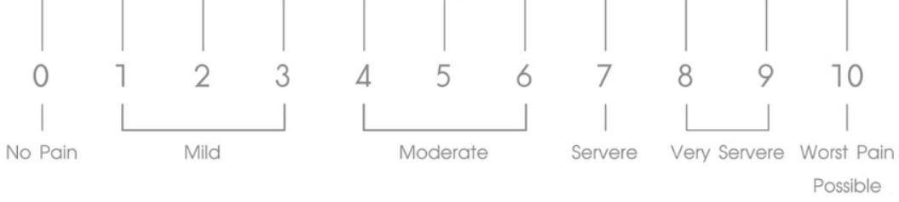

<div class="pain-scale-wrapper" *ngIf="isPainModelOpen">
  <div class="pain-scale-container">
    <h2 class="heading">PAIN MEASUREMENT SCALE</h2>
    <div class="gradient-bar">
      <input 
        type="range" 
        min="0" 
        max="10" 
        step="1" 
        class="pain-slider" 
        id="painSlider" 
        [value]="painValue" 
        (input)="onSliderChange($event)" 
      />
    </div>
    <div class="pain-labels">
      
    </div>
    <div class="save-button-container">
      <button 
        class="save-button" 
        (click)="savePainValue()" 
        [disabled]="!hasPainValueChanged" 
        [ngClass]="{'disabled-button': !hasPainValueChanged}"
      >
        
        Save
      </button>
    </div>
  </div>
</div>
